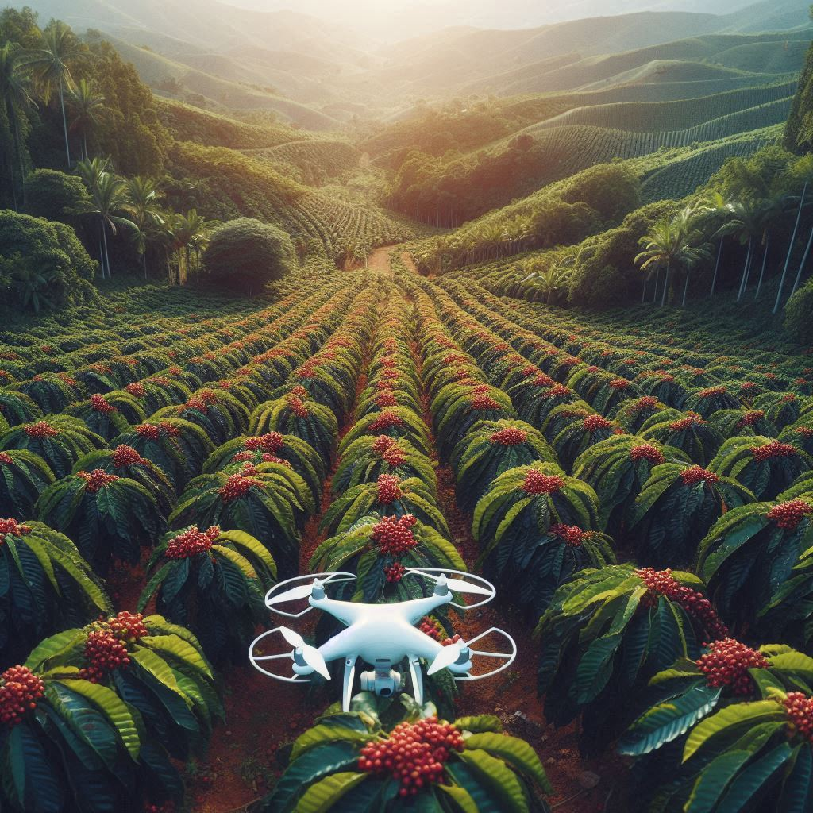

Bem-vindo à nossa página dedicada às inovações tecnológicas na produção de café no Brasil.
Ao longo dos anos, o setor cafeeiro brasileiro tem se reinventado constantemente, adotando tecnologias de ponta que visam aumentar a eficiência, sustentabilidade e qualidade na produção de um dos grãos mais apreciados do mundo. O Brasil, reconhecido como o maior produtor e exportador de café global, está na vanguarda dessa revolução tecnológica, implementando soluções inovadoras que estão transformando a maneira como o café é cultivado. Uma das inovações mais notáveis é o uso de drones na agricultura. Esses dispositivos sobrevoam as plantações, mapeando áreas e fornecendo dados precisos sobre a saúde das plantas. Com câmeras de alta resolução e sensores multiespectrais, os drones ajudam a identificar pragas, doenças e estresses hídricos antes que eles se tornem visíveis a olho nu. Isso permite que os agricultores tomem medidas preventivas rapidamente, reduzindo perdas e melhorando a produtividade.
Outra tecnologia revolucionária é a aplicação de sensores de solo inteligentes. Esses sensores medem em tempo real a umidade, temperatura e composição do solo, fornecendo informações essenciais para uma irrigação precisa e eficiente. Com esses dados, os agricultores podem otimizar o uso da água, um recurso cada vez mais escasso, garantindo que cada planta receba a quantidade exata de água necessária para seu desenvolvimento.
A automação também está ganhando espaço nas plantações de café. Máquinas colheitadeiras modernas, equipadas com inteligência artificial, conseguem distinguir entre grãos maduros e verdes, colhendo apenas os frutos no ponto ideal de maturação. Isso não só aumenta a eficiência da colheita como também melhora a qualidade do café, uma vez que os grãos são colhidos no momento perfeito.
Além disso, o uso de tecnologias de blockchain está revolucionando a rastreabilidade do café. Com essa tecnologia, cada etapa da produção pode ser registrada e verificada, desde o plantio até a xícara do consumidor. Isso não só garante a autenticidade do produto como também oferece transparência total, valorizando o trabalho dos produtores e permitindo que os consumidores conheçam a origem e as práticas sustentáveis envolvidas na produção do café que consomem.
Essas são apenas algumas das muitas inovações que estão sendo implementadas no cultivo de café no Brasil. Ao explorar nossa página, você descobrirá como essas tecnologias estão moldando o futuro do café brasileiro, promovendo uma produção mais sustentável, eficiente e de alta qualidade. Acompanhe-nos nessa jornada fascinante pelo universo tecnológico do café e veja como a tradição e a inovação se encontram para criar o café perfeito.
Aqui estão alguns exemplos de tecnologias empregadas para a produção de café no Brasil:
- Monitoriamento e Sensoriamento Remoto: Drones equipados com câmeras e sensores monitoram o estado das plantações, identificando pragas, doenças e deficiências nutricionais.
- Mapeamento e Análise: Drones são usados para criar mapas detalhados das plantações, permitindo uma gestão mais precisa e eficiente.
- Irrigação de Precisão: Sistemas de irrigação controlados por sensores que monitoram a umidade do solo e a necessidade de água das plantas, otimizando o uso da água.
- Fertirrigação: Sistemas que combinam irrigação e fertilização, permitindo uma nutrição mais eficiente das plantas e reduzindo o uso de fertilizantes químicos.
- Tecnologia de Pós-Colheita: Equipamentos que secam os grãos de café de maneira uniforme e eficiente, melhorando a qualidade do produto final.
- Sistemas de Gestão Agrícola (AgTech): Plataformas que ajudam os produtores a gerenciar suas operações agrícolas, monitorando a produção, custos e vendas.
- Genética e Biotecnologia: Desenvolvimento de variedades de café mais resistentes a pragas, doenças e condições climáticas adversas.
- Sistemas de Produção Sustentável: Integração do cultivo de café com outras espécies vegetais, promovendo a biodiversidade e a sustentabilidade.
- Tecnologia de Processamento de Café: Equipamentos que controlam a torra do café com precisão, garantindo a qualidade e o sabor do produto final.
- Monitoramento Climático: Estações meteorológicas que monitoram as condições climáticas nas fazendas para melhorar o manejo da lavoura.